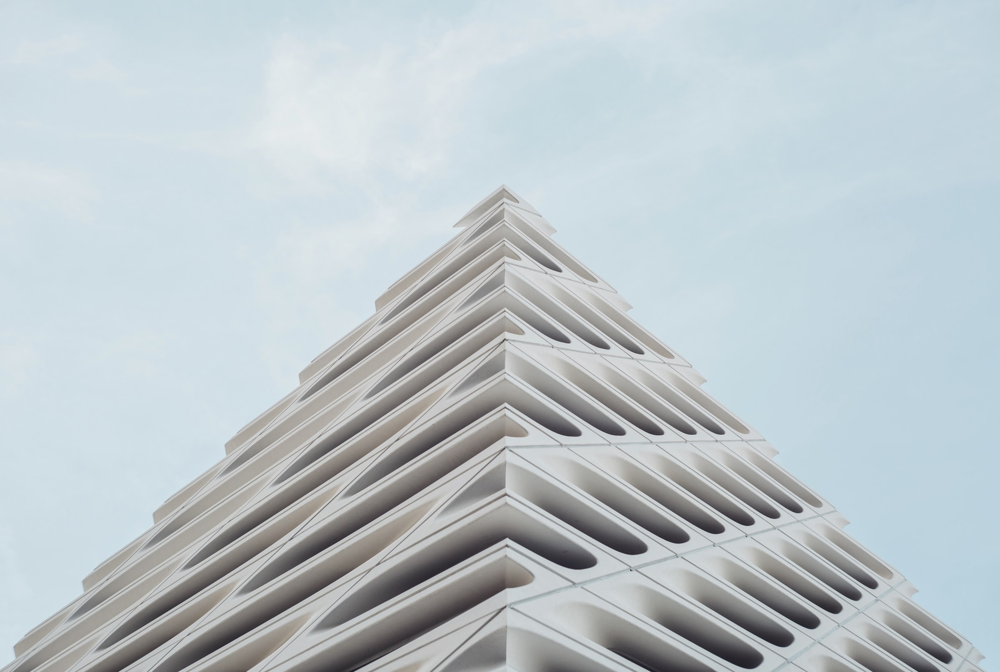

ARCHI WEEKLY is a weekly magazine for anybody who has a passion and determination to shape the world around them, including the 13.6 million readers that visit ARCHI WEEKLY every month.
Los Angeles, USA
The Broadis a contemporary art museum in Los Angeles offering free general admission and an active program of rotating exhibitions.
It is housed in a new building designed by architecture firm Diller Scofidio + Renfro and structural engineering firm Leslie E. Robertson Associates. The final building costs are estimated at $140 million. With a location adjacent to Frank Gehry's iconic Walt Disney Concert Hall, the museum's design is intended to contrast with its bright metallic perforated exterior while respecting its architectural presence by having a porous, "honeycomb-like" exterior.
The building design is based on a concept entitled "the veil and the vault". "The veil" is a porous envelope that wraps the whole building, filtering and transmitting daylight to the indoor space. This skin is made of 2,500 rhomboidal panels made in fiberglass reinforced concrete supported by a 650-ton steel substructure. "The vault" is a concrete body which forms the core of the building, dedicated to artworks storage, laboratories, curatorial spaces and offices. The museum's unorthodox facade, which the architects refer to as the "veil", has proved very tricky to fabricate, leading to delays in the construction schedule. With its geometric glass-fibre reinforced-concrete skin and its rather blank aspect, it ends up as a self-contained object, a cute box which does little for the city and the street but which contains a deceptively good gallery.
Almost since it was rebuilt there has been a metropolitan intention to anchor Bunker Hill with an arts district. The latest step is the Broad Museum, Diller Scofidio + Renfro’s striking exoskeletal cage. Positioned beside Frank Gehry’s swirling Disney Concert Hall, it has to decide whether it tries to stand up to it, defer to it, ignore it or enter into some kind of conversation with it. Ultimately, it doesn’t quite do any of these things. Instead it looks like an exquisitely detailed 3D-printed artefact glued onto a dusty municipal model of Downtown LA from the late ’90s.
photo by: Julien Moreau